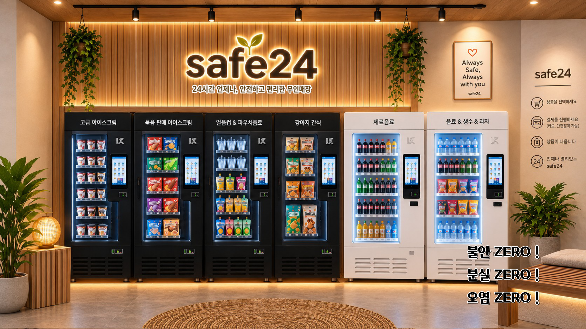
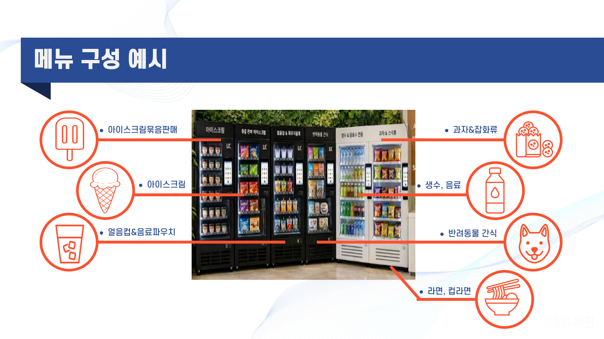

사람 없이도 안전하게,
SAFE24 무인매장 창업
선결제 후 배출 방식으로 도난·기물파손을 원천 차단합니다. 높은 가맹비 없이, 기존 매장을 활용해 무인매장을 시작하세요.

선결제 후 배출 방식으로 도난·기물파손을 원천 차단합니다. 높은 가맹비 없이, 기존 매장을 활용해 무인매장을 시작하세요.
식품안전 문제부터 도난, 기물파손, 사적 제재로 인한 분쟁까지 — 무인매장 운영에는 늘 리스크가 따라다녔습니다. SAFE24는 구조 자체로 이 문제들을 없앱니다.
합리적 가격 정책, 인건비 절감으로 다매장 운영 접근성 강화
결제 후 잠금 해제 방식으로 도난을 구조적으로 방지
물품에 대한 무분별한 접근을 막아 위생 관리 강화
앱 기반 재고·매출 분석으로 효율 극대화, 1년 내 폐업 시 30% 지원
IoT 도입으로 완전한 무인매장 운영, 보안 강화
운영 비용 절감분을 반영해 가격 경쟁력 확보
기본 컬러와 통일된 디자인만으로 공간과 자연스럽게 어울리며, 기존 매장을 활용하면 인테리어 비용을 더 절감할 수 있습니다.

신규 창업이든 기존 매장의 무인화 전환이든, 상담 후 조건에 맞춰 안내드립니다.